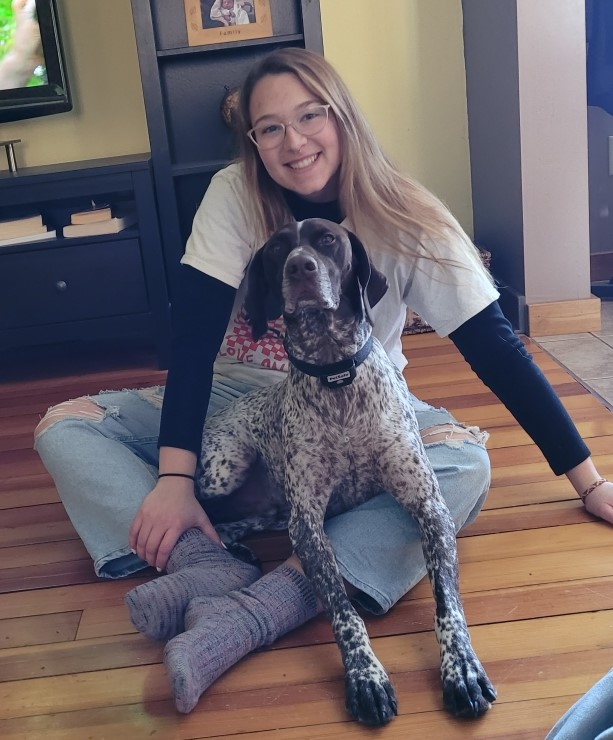

Welcome to Wemapping. As the semester goes on I will be using my gained knowledge to update and refine my webpage.
About Me
I grew up in rural Minnesota, northwest of La Crosse. I graduated high school in 2019 and did my first year of undergrad at St. Catherine University, in St. Paul, MN. I realized that I needed a different space in order to continue my education and decided to go on 2 campus tours; 1 is Eau Claire and 1 in La Crosse. I was expecting myself to go to Eau Claire but as soon as I got to La Crosse I knew this where I wanted to go.
Now I am a senior, finishing up my studies as a Geography Major with a double minor in Literary and Cultural Studies and Earth Science. I graduate in May!
I plan on staying in the driftless region for a while after graduation, and hopefully getting some experience in different fields available for Geography majors. I will be applying to graduate school after a gap year. I want to study geomorphology.
More About Me
I have a dog named Cooper. He is a german short hair pointer. He has tons of energy and loves attention. He needs to be cuddled 24/7. My family got him when he was just a 10 month old puppy and June of 2023 he will be turning 6 years old!
